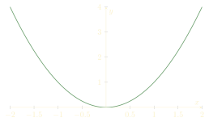
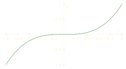

Euclid (the geometer!) found a wonderful proof that there are infinitely many primes. But later mathematicians, even ones as illustrious as Euler, still revisited this result to give new proofs! What is the point of proving a theorem you already know is true?
Part of this purpose is personal; mathematicians tend to prefer doing math to reading math, which means it is more fun for them to invent their own proofs than it is read existing ones. But part of it is practical: new proofs can lead to new insights.
The goal of this article is to talk about how Euler found a new proof of the infinitude of the primes, which generalizes much more nicely than Euclid's original proof.
For example, there are many prime numbers ending in a 7: \[ 7,17,37,47,67,97,107,127,137,157,167,197,227,\cdots,\] but how do we know there are infinitely many? It turns our Euclid's strategy doesn't generalize well, but Euler's strategy does! Dirichlet was able to push Euler's strategy further and prove the sequence never terminates.To begin, we give Euclid's proof that infinitely many primes exist, and then show how you can use the same strategy to prove a related theorem.
To prove the infinitude of the primes, Euclid started by taking a list \(p_1, p_2, ..., p_n\) of \(n\) primes. We are now going to describe an algorithm, discovered by Euclid, which from this data produces a new prime. In particular, no finite list of primes can contain every prime, and thus the primes must be infinite.
Euclid's idea is very simple. Set \[N := p_1p_2\cdots p_n + 1.\] Then, find the smallest prime factor \(q\) of \(N.\) This prime factor \(q\) must exist (because every positive integer has a prime factorization). But this prime \(q\) cannot be any of the \(p_1, ..., p_n.\) This is because \(q\) is a factor of \(N\) (meaning \(N\) is divisible by \(q\)), but when you divide \(N\) by \(p_1,\) or \(p_2,\) or \(p_3,\) etc., you always get remainder \(1.\) Thus \(q\) is a prime number not in your list!
Euclid's argument is very elementary, and a really nice proof of the infinitude of the primes. You might have seen it before, because it is so quick that it's still repeated to this day!
In our last article, on the Riemann zeta function, we explained how Euler found a new proof of the infinitude of the primes. Euler proved a slightly stronger statement: he showed the sum \[\sum_{p\text{ prime}} \frac{1}{p} = \frac{1}{2} + \frac{1}{3} + \frac{1}{5} + \frac{1}{7} + \frac{1}{11} + \cdots\] was infinite. If there were only finitely many primes, this sum would have only finitely many terms, and so the infinitude of this sum implies the infinitude of the primes.
To remind the reader of what happened there, let's quickly recap Euler's computation of \[\sum_p \frac{1}{p}.\]
Euler started by using the fact that the Harmonic series \[\sum_{n=1}^{\infty} \frac{1}{n} = 1 + \frac{1}{2} + \frac{1}{3} + \frac{1}{4} + \frac{1}{5} + \cdots\] diverges; that is, in Euler's time it was already known that \[\sum_{n=1}^{\infty} \frac{1}{n} = +\infty.\] If you've never seen this before, then we remark that perhaps it's surprising: we're adding up smaller and smaller numbers, yet we still get \(\infty.\) This is in contrast to the infinite geometric series \[\frac{1}{2} + \frac{1}{4} + \frac{1}{8} + \frac{1}{16} + \cdots = 1,\] where we add up smaller and smaller numbers and in the end get something finite.
But anyways, Euler then found a creative way to factor the harmonic series. Observe that consider the product \[ \bigg(1+\frac1{2}+\frac1{4}+\cdots\bigg)\bigg(1+\frac1{3}+\frac1{9}+\cdots\bigg)\bigg(1+\frac1{5}+\frac1{25}+\cdots\bigg).\] When we distribute out the terms in this sum, we will get terms like \[1 \cdot 1 \cdot 1=1,\ \ \frac{1}{2} \cdot 1 \cdot 1=\frac1{2},\ \ \frac{1}{2} \cdot \frac{1}{3} \cdot 1 = \frac{1}{6},\ \ \frac{1}{4} \cdot \frac{1}{9} \cdot \frac{1}{5} = \frac{1}{180},\] as well as many more. Indeed, when we expand this sum out, we're going to get fractions whose denominators are any number which can be built out of 2, 3, and 5. For example, if we wanted to find the term \(1/75\) in the infinite product, we would compute the prime factorization \(75=3\cdot25\) and realize that \[ \frac1{75}=1\cdot\frac1{3}\cdot\frac1{25} \] appears in the expansion.
Because every number admits a unique prime factorization, and can be built out of prime numbers in a unique way, Euler realized that if we took the infinite product \[ \bigg(1+\frac1{2}+\frac1{4}+\cdots\bigg)\bigg(1+\frac1{3}+\frac1{9}+\cdots\bigg)\bigg(1+\frac1{5}+\frac1{25}+\cdots\bigg) \cdots = \prod_{p\text{ prime}} \left(1 + \frac{1}{p} + \frac{1}{p^2} + \frac{1}{p^3} + \cdots\right),\] then this infinite product would contain every term \(1/n\) exactly once after we distributed it out.
Thus, \[1 + \frac{1}{2} + \frac{1}{3} + \frac{1}{4} + \frac{1}{5} + \cdots = \prod_p \left(1 + \frac{1}{p}+ \frac{1}{p^2}+\frac{1}{p^3}+\cdots\right).\] Infinite sums like \[1 + \frac{1}{p} + \frac{1}{p^2} + \frac{1}{p^3} + \cdots\] are called geometric series, and we know how to evaluate them; using the known values of this series, we find \[1 + \frac{1}{2} + \frac{1}{3} + \cdots = \prod_p \frac{1}{1- \frac{1}{p}}.\] The left hand side of this expression is infinity, so really we have \[\prod_p \frac{1}{1 - \frac{1}{p}} = \infty.\]
But this isn't quite what we wanted. We wanted a sum over all primes. However, if you take the logarithm of our identity, and use that logarithms turn products into sums, you get \[\sum_p \log\left(\frac{1}{1-\frac{1}{p}}\right) = \log\infty = \infty.\] Euler then used the approximation \[\log\left(\frac{1}{1-x}\right) \approx x\] to see that \[\sum_p \frac{1}{p} = \infty.\] See our article on the Riemann hypothesis for more details about this approximation, if you're interested.
But the upshot is we now know \(\sum_p 1/p=+\infty,\) and so there are infinitely many primes! This was Euler's proof of the infinitude of the primes.
Dirichlet was interested in a slightly more precise question: are there infinitely many primes \(p\) such that \[p \equiv 1 \pmod{4}?\] For example, it seems you can find many primes with this property: \[5, 13, 17, 29, 37, 41, 53, 61, 73, 89, 97, ...,\] and it seems like these go on forever. But do they?
Try as you might, it does not seem possible to prove the infinitude of primes which are 1 mod 4 using a Euclid-style argument. Starting with primes \(p_1,\dots,p_n\) which are 1 mod 4, we can try to find a prime factor of \(N=p_1\cdots p_n+1\) which is again 1 mod 4. This isn't always possible: for example, even though \(p_1=5\) and \(p_2=13\) are both 1 mod 4, the number \(N=5\cdot13+1=66\) does not have any prime factors which are 1 mod 4! So, for this specific generalization, the original proof of the infinitude of the primes doesn't cut it!
Dirichlet's insight was that Euler's proof of the infinitude of the primes does generalize! In other words, Dirichlet decided to try computing \[\sum_{p \equiv 1\pmod{4}} \frac{1}{p} = \frac{1}{5} + \frac{1}{13} + \frac{1}{17} + \frac{1}{29} + \frac{1}{37} + \cdots,\] and hoped it was infinite.
As a first step, we can take the infinite product \[\prod_p \frac{1}{1-\frac{1}{p}}\] from before, and modify it to be \[\prod_{p\equiv 1\pmod{4}} \frac{1}{1-\frac{1}{p}} = \prod_{p\equiv 1\pmod{4}} \left(1 + \frac{1}{p}+\frac 1{p^2}+\cdots\right).\] Unfortunately, when we just do this and expand it out, the right hand side is a lot trickier to analyze than the harmonic series was. The right hand side now consists of all the fractions \(\frac{1}{n}\) whose denominator only involves primes which are 1 modulo 4. For example, the first few terms of this series are \[\prod_{p\equiv 1\pmod{4}} \frac{1}{1-\frac{1}{p}} = 1 + \frac{1}{5} + \frac{1}{13} + \frac{1}{25} + \frac{1}{17} + \cdots,\] where a term like \(1/25\) appears (because its denominator involves only \(5^2\)), or a term like \(1/65\) will eventually appear (because \(65 = 5 \cdot 13\) only has primes which are 1 modulo 4), but the fractions \(1/2, 1/3, 1/7,\) will never appear, because they cannot be built out of primes which are 1 modulo 4.
Because these terms were so hard to control, Dirichlet thought of doing something else; we now call his trick a discrete Fourier transform. To explain his great strategy, we first illustrate it in a simpler context.
Fourier theory is now understood as a way of decomposing functions in terms of functions with simple symmetries. Traditional Fourier theory involves decomposing functions as sums of sine waves; these sine waves have a certain symmetry in that they are periodic. Discrete Fourier theory decomposes functions in terms of simpler types of symmetries.
The simplest type of discrete Fourier theory, and the one relevant to Dirichlet's work, is the decomposition of functions into even and odd functions.
An even function, like the one pictured above, is a function which is symmetric about the \(y\)-axis. In formulas, an even function obeys \(f(-x) = f(x),\) but it might be a little more natural to think about the symmetry.
In contrast, an odd function, like the one pictured below, has a \(180^{\circ}\) rotational symmetry; that is, if you rotate the graph \(180^{\circ}\) around the origin, then it won't change at all. In formulas, an odd function obeys \(f(-x)=-f(x),\) but again it is a little easier to think about the visual symmetry.
Every function can be written as the sum of an even function and an odd function. This is because, given a function \(f(x),\) we can build the function \[E(x) = \frac{f(x) + f(-x)}{2}\] and the function \[O(x) = \frac{f(x) - f(-x)}{2}.\]
The function \(E(x)\) is always an even function, \(E(-x) = E(x)\) (can you see why?) and the function \(O(x)\) is always an odd function, \(O(-x) = -O(x).\)
Moreover, \[f(x) = E(x) + O(x),\] because when we add \(E\) and \(O,\) the \(f(-x)\) terms cancel out. The functions \(E\) and \(O\) are easier than the function \(f\) we started off with, since it has an extra symmetry we can play around with.
We will employ this trick below. Namely, we have a certain sum \[\sum_{p\equiv 1\pmod{4}} \frac{1}{p}\] we want to compute. We won't be able to compute this directly; instead, we will find some other terms to tack on to this infinite sum which make it easier to understand. After that, we will find some way to recover the original sum we care about from the modified sum. Thus we never have to study this tricky sum directly; instead, we break it up into two much easier to understand pieces!
Every prime number (except the prime number 2, which likes to be unique) is congruent to either 1 or 3 modulo 4. Dirichlet thought that this dichotomy of primes modulo 4 was similar to the even-odd function dichotomy explained above. So, Dirichlet's strategy was simple: introduce the 3 mod 4 primes in, but weight them differently, and hope to then do some Fourier analysis to extract out the \(1\) modulo 4 primes from the total.
Thus, Dirichlet considered the infinite product \[L = \prod_{p\equiv 1\pmod{4}} \left(1 + \frac{1}{p} + \frac{1}{p^2} + \cdots\right) \cdot \prod_{p\equiv 3\pmod{4}} \left(1 - \frac{1}{p} + \frac{1}{p^2} - \frac{1}{p^3} + \cdots\right).\] Dirichlet used the letter \(L\) for this infinite product; we now call certain generalizations of the Riemann zeta function by the name \(L\)-functions, in honor of Dirichlet's work. (It seems a little unfair that Riemann is honored by getting a function named after him, but Dirichlet gets honored by having a function named after the notation he used, but oh well.)
Note the subtle difference in the products used for the 1 mod 4 primes and the 3 mod 4 primes. If we use the geometric series formula to simplify those products, we find \[L = \prod_{p\equiv 1\pmod{4}} \frac{1}{1 - \frac{1}{p}} \cdot \prod_{p\equiv 3\pmod{4}} \frac{1}{1 + \frac{1}{p}}.\]
This new infinite product is just like the original infinite product, but with two important differences: we've left out the prime number 2, and also some of the terms in our infinite geometric series are negative. The fact that we've left out the prime number 2 isn't a very serious problem; it just means that when we distribute out the sum, we're only going to get the odd numbers in our denominators, instead of all numbers (because odd numbers can be built out of the primes besides 2).
The trickier issue is understanding when we will have positive fractions and when we will have negative fractions after expanding out. As a simple example, let's consider the two-term product \[\left(1 + \frac{1}{5} + \frac{1}{25} + \frac{1}{125} + \cdots\right)\left(1 - \frac{1}{3} + \frac{1}{9} - \frac{1}{27} + \cdots\right).\] Here, the left term is a sum over all the powers of 5 (the smallest prime which is 1 mod 4) and the right term is an alternating sum over all the powers of 3 (the smallest prime that is 3 mod 4). When we expand this out, we'll get fractions \(1/n\) whose denominator \(n\) can be made out of 3's and 5's. So, for example, we'll get denominators like \(5, 15, 45,\) or \(75.\)
Now, the term \(\frac{1}{5}\) comes from \(\frac{1}{5} \cdot 1\) when we distribute things out; so, it is positive. But \(\frac{1}{15}\) comes from \(\frac{1}{5} \cdot \left(-\frac{1}{3}\right)\), so the \(1/15\) will be negative in our sum. If we think carefully about distributing the first few terms, we will get \[1 - \frac{1}{3} + \frac{1}{5} + \frac{1}{9} - \frac{1}{15} + \frac{1}{25} - \frac{1}{27} + \frac{1}{45} + \cdots.\]
The positive terms have denominators \[1, 5, 9, 25, 45, \cdots,\] and the negative terms have denominators \[3, 15, 27, \cdots.\] Dirichlet noticed a pattern: the positive terms have denominators which are 1 mod 4, while the negative terms have denominators which are 3 mod 4!
When we did our sample expansion above, we only used the primes 3 and 5, so we only got the numbers which can be built out of the primes 3 and 5. When we do the entire infinite product \(L\) from above, we find \[L = \sum_{n=0}^{\infty} \frac{1}{4n+1} - \frac{1}{4n+3} = 1 - \frac{1}{3} + \frac{1}{5} - \frac{1}{7} + \frac{1}{9} - \cdots,\] where we add terms whose denominators are 1 mod 4, and subtract terms whose denominators are 3 mod 4.
Observe now that \[\frac{1}{4n+1} - \frac{1}{4n+3} = \frac{2}{(4n+1)(4n+3)},\] so we can rewrite \[L = \sum_{n=0}^{\infty} \frac{2}{(4n+1)(4n+3)}.\] In particular, despite the subtraction signs we originally used to express our sum \(L,\) it is actually a sum of positive terms. Thus, \[L \gt 0.\] In fact, Leibniz showed that \(L=\pi/4\), though we won't be using this!
But wait, why does this matter? Well, recall that \[L = \prod_{p\equiv 1\pmod{4}} \frac{1}{1 - \frac{1}{p}} \cdot \prod_{p \equiv 3\pmod{4}} \frac{1}{1 + \frac{1}{p}}.\] So, taking logarithms and using the same approximation that Euler used, we find \[\log L \approx \sum_{p \equiv 1\pmod{4}} \frac{1}{p} - \sum_{p\equiv 3\pmod{4}} \frac{1}{p}.\]
Now, our discrete Fourier transform will really shine. Thanks to Euler, we know \[\sum_{p\equiv 1\pmod{4}} \frac{1}{p} + \sum_{p\equiv 3\pmod{4}} \frac{1}{p} = \sum_{p\neq 2} \frac{1}{p} = \infty.\] If we take the two equations \[\log L \approx \sum_{p\equiv 1\pmod{4}} \frac{1}{p} - \sum_{p\equiv 3\pmod{4}} \frac{1}{p},\] \[\infty = \sum_{p\equiv 1\pmod{4}} \frac{1}{p} + \sum_{p\equiv 3\pmod{4}} \frac{1}{p},\] and add them up, then we find \[\log L + \infty \approx 2 \cdot \sum_{p\equiv 1\pmod{4}} \frac{1}{p}.\]
This was the point of introducing the extra terms coming from the primes \(p\equiv 3\pmod{4}\); they made the left hand side (the \(\log L\) part) easier to understand, but in the end we used the trick of discrete Fourier theory to extract out the part we cared about (the \(p\equiv 1\pmod{4}\) primes).
In fact the same argument shows that \[\infty-\log L \approx 2 \cdot \sum_{p\equiv 3\pmod{4}} \frac{1}{p},\] which shows that there are also infinitely many primes which are 3 modulo 4!
Now, earlier we observed \(L \gt 0.\) Why did we need to know that? Because if \(L = 0,\) then we could have \[\log L + \infty = \log(0) + \infty = -\infty + \infty,\] an indeterminate form (the infinities cancel out and that sum can be anything). But because \(L \gt 0,\) we know \(\log L \gt -\infty,\) so that \[\log L + \infty = \infty.\] Thus \[\infty = 2 \cdot \sum_{p\equiv 1\pmod{4}} \frac{1}{p},\] which means \[\sum_{p\equiv 1\pmod{4}} \frac{1}{p} = \infty.\] This is great! We now see that, in particular, there have to be infinitely many primes which are 1 modulo 4, because otherwise there is no way the sum on the left could be finite.
Thus, by taking adapting Euler's method of proof, Dirichlet managed to prove a much stronger theorem, which cannot be proven using Euclid's original method.
Dirichlet's full theorem asserts the following: if \(a, n\) are two positive integers having no common prime factors, then there are always infinitely many primes \(p\) such that \(p \equiv a \pmod{n}.\) For example, when \(n=10\), this says there are infinitely many prime numbers ending in a 1, 3, 7, or 9. Primes can end in other numbers, like 2, but that only happens once!
Dirichlet's full theorem is proven using a very similar strategy to the above, but there are two subtle points. The first is that, above, we got to use a very simple kind of discrete Fourier transform, involving only \(1\) and \(-1.\) In general, you will need to use a discrete Fourier transform involving certain complex numbers called roots of unity.
As an example, suppose you want to determine a number \(A.\) Above, we used that you could first find some auxillary quantity \(B\) for which you knew how to compute \(A+B\) and \(A-B.\) Then, if you know say \[A + B = 3,\] \[A - B = 5,\] you can solve for \(A\) by adding these two equations together.
In general, you might need to use more complicated discrete Fourier transforms, like the following. Suppose you can introduce three new numbers \(B, C, D\) and suppose you can compute all four values \[A + B + C + D,\] \[A + iB - C - iD,\] \[A - B - iC + iD,\] \[A - iB + iC - D.\] Then, you can add all of these expressions up to recover the value of \(4 \cdot A.\)
This sort of trick is called a discrete Fourier transform; we only needed to do the two variable version because all prime numbers (except 2) were either 1 mod 4 or 3 mod 4; in other words, we only had two possibilities. But if we were working, say, modulo 10, then there would be four possibilities: with two exceptions, every prime number ends in either 1, 3, 7, or 9. This is four possibilities, which is why we end up needing a total of four variables to use this proof strategy.
The second difference between the 1 mod 4 case and the general case of Dirichlet's theorem is that we got lucky, in that for us it was easy to see that the infinite sum \[\sum_{n=0}^{\infty} \frac{1}{4n+1} - \frac{1}{4n+3}\] was nonzero. In general the infinite sums you get involve some additions and some subtractions (and occassionally even some complex numbers!), and it can be difficult to explain why it will be nonzero (which you need to know in order to take the logarithm and not get \(-\infty\)).
This second issue can be resolved in a number of ways, but all involve some amount of more advanced number theory than we discussed here. Still, we hope you appreciate seeing the proof strategy of Dirichlet's theorem!